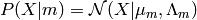
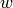

Mixture-of-Gaussians EM Algorithm¶
This software uses KlustaKwik to do the clustering on subsets of channels. I originally used a different approach to clustering, where all channels were clustered at once using a modified EM algorithm. When I switched back to using the standard mixture-of-Gaussians EM algorithm on subsets of channels, I switched to KlustaKwik, since it is faster and better tested than my clustering program (which can be found in core/CEM_adjacency.py.)
I wrote up these notes as part of the explanation of that clustering method. Now this section is possibly unnecessary, but I include it just in case someone is interested.
EM Algorithm¶
Clustering can be cast as a statistical inference problem like linear regression, in which we find the best model to fit our data. Here, the model is a mixture model, where there are several different mixture components with different parameters producing data points. The data-generating process in a mixture-of-Gaussians model is as follows:
Repeat this N times independently, where N is the number of data points:
- Randomly select a mixture component m with probability
- Select a point from the probability distribution of this component, using probability distribution , where
and
are means and covariances.
We assume that our dataset, i.e., our collection of feature vectors, was generated using this process. Our goal is to fit the parameters to the data. In particular, we look for the maximum likelihood values of the parameters, which are the parameter values that maximize P(Data | Parameters). From now on, we will use X as shorthand for “data”, and as shorthand for “parameters”, i.e., . Note that is a probability density, not a finite probability.
Suppose Z is the latent variable that says which observed vector comes from which cluster, called the responsibilities. Then the likelihood L is as follows:
We iterate the following two steps to maximize L over the parameters:
- E Step: update Z, i.e., or more precisely, .
- M Step: update the maximum likelihood values for each cluster.
We compute likelihood score after each step. L is guaranteed to increase after each EM step pair. This is because the likelihood can be written as
KL is the Kullback-Liebler divergence, a nonnegative distance between two probability distributions. In words, the above equation reads
The likelihood score is the first term on the right-hand side, . In the M step, we strictly increase the first term while keeping the second term constant. On the E step, we drive the second term to zero, but the sum remains constant, so the first term, the likelihood score, must decrease.
This is based on chapter 9 of (Bishop, 2006).
Selecting the number of clusters¶
The number of clusters is not known beforehand. More mixture components always leads to a higher likelihood score. Therefore, to be able to use split and delete steps, and sensibly determine the number of clusters, we must add a penalty term based on number of clusters–a penalty for model complexity. The penalty we use is based on the Bayes Information Criteria (BIC).
To understand the BIC we must introduce the Bayesian perspective on inference (as opposed to the maximum likelihood approach). In the Bayesian approach, we are looking for the posterior probabilities like P(Model | Data) and P(Parameters | Data). This requires us to assign prior probabilities P(Model) and P(Parameters).
Terminology note:
- “Parameter” refers to numerical values, like the cluster means
- “Model” refers to the number of mixture components, i.e., we have a 5-cluster model and 6-cluster model for the data.
The Bayesian approach gives a sensible way to do model selection, i.e., determine the number of clusters. We simply look for the model that has the highest posterior probability P(Model | Data).
P(Model | Data) = P(Data | Model) P(Model) / P(Data)
Ignoring P(Data)–which is summed over all models–and assuming the same prior probability P(Model) for all all models, we are left with:
P(Model | Data) ~ P(Data | Model)
P(Data | Model) is really an integral over all the possible parameters that go with the model. Using the notation X = Data, = Parameters, = Model.
is the volume of the peak in the posterior distribution over parameters , and is the volume of the peak in the prior distribution over parameters . is the “maximum a posteriori” value of , i.e., the value that maximizes . Here we used the approximation of a Gaussian integral as the peak value times its width. Thus and .
The term acts like a “complexity penalty” that penalizes models with more clusters. Assuming scalar parameters , then
Thus we see that this term decreases exponentially with number of parameters.
The idea behind the BIC is to try to approximate the Bayesian calculation of the posterior probability . Then we find the model that maximizes this. . So we have to make a rough approximation of , even though we do not have a prior or a posterior distribution.
For a given scalar parameter , suppose the width of the prior is . Then, after N measurements, we get . Using the above equation, we get
Here N is the number of points, and p is the number of parameters.
Using the BIC, we do model selection by maximizing
In the case of clustering, the parameters of a given cluster are only constrained by the points in that cluster–not all points–so the following is more accurate:

where is the number of points in the mth cluster. This amounts to a constant correction of , where M is the total number of clusters. Note that smaller clusters are penalized less than larger clusters, though a small cluster and a large cluster are penalized more than two medium-sized clusters. Interestingly, this resembles the minimum message length, which is also frequently used as a complexity penalty for model selection. In clustering, it takes the form (Wallace et al., 1987) via (Shoham et al., 2003):
- Bishop, M. Pattern recognition and machine learning (2006).
- Shoham, S. and Fellows, M.R. and Normann, R.A. Robust, automatic spike sorting using mixtures of multivariate t-distributions, Journal of neuroscience methods (2003).
- Wallace, C.S. and Freeman, P.R. Estimation and inference by compact coding. Journal of the royal statistical society (1987).